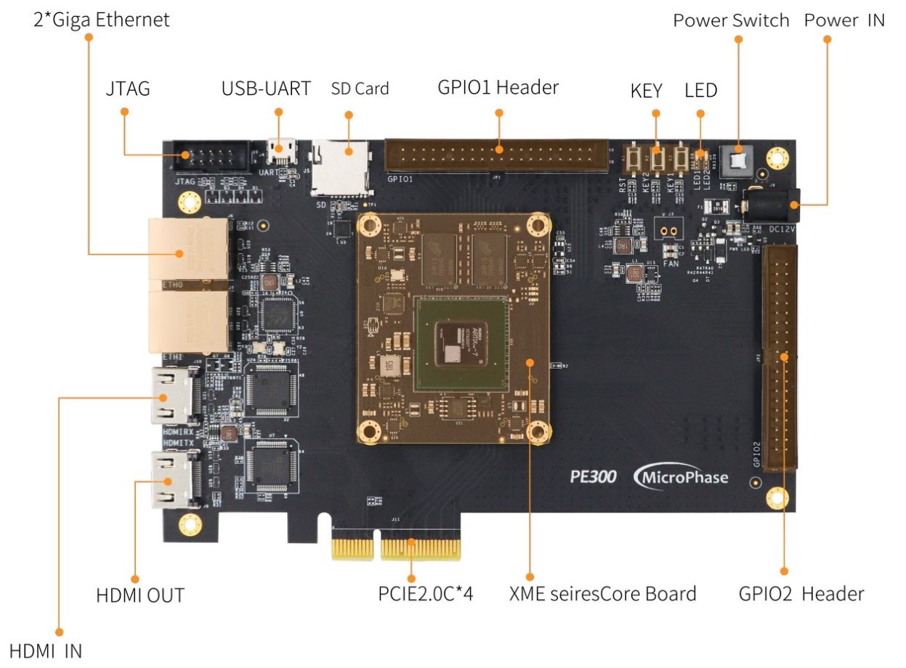
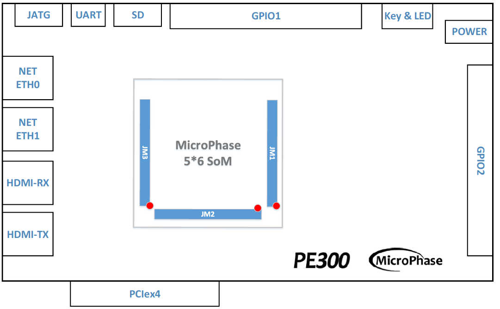
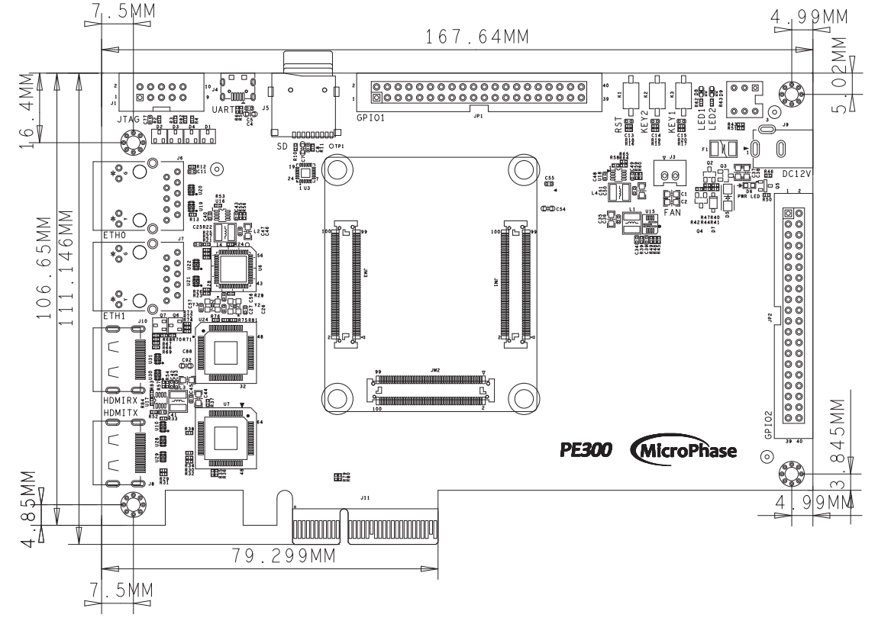
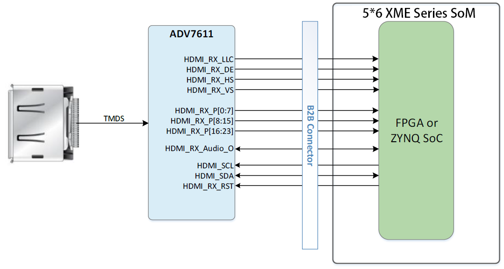
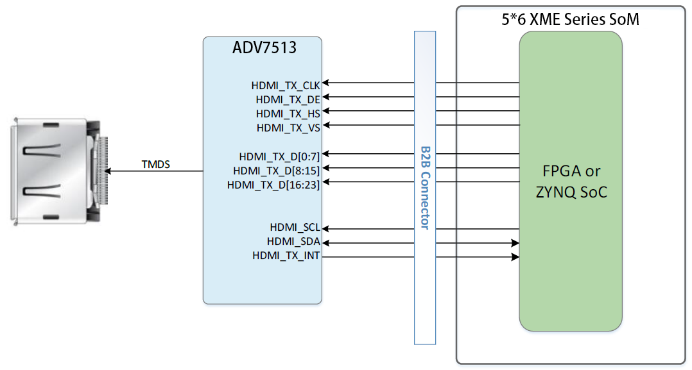
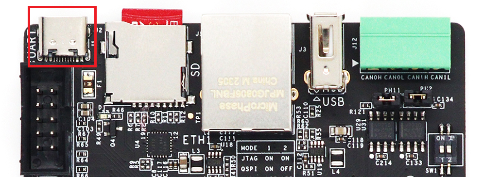
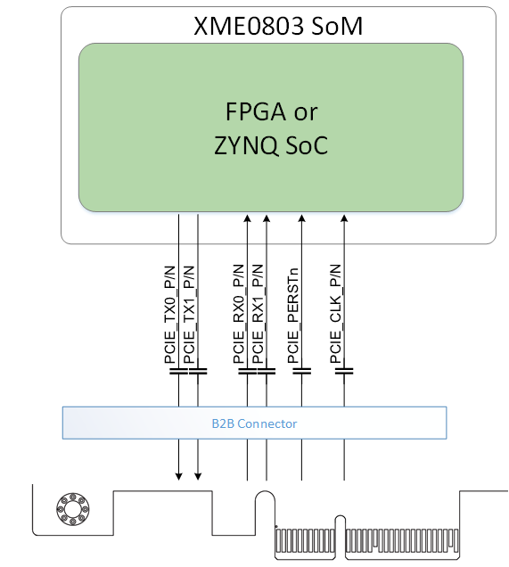
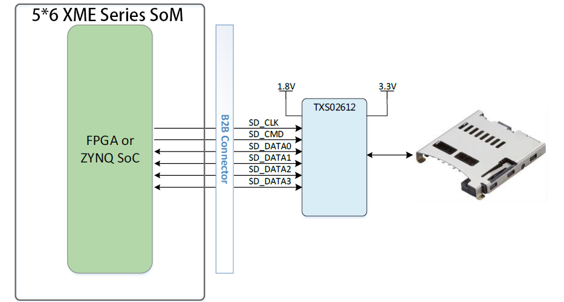
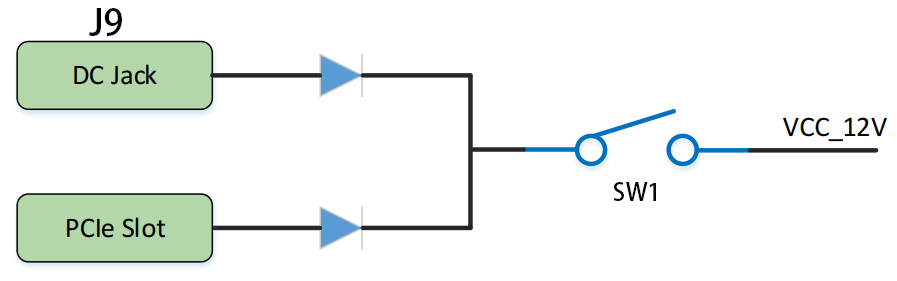

PE300 Reference Manual
WeChat Public Number:

●1. Overview
Using PE300, you can quickly test, develop, and evaluate the function of the Microphase’s 5*6 XME series SoM. It provides various interfaces for XME series SoM, such as HDMI TX, Giga ETH, SFP ,PCIe 2.0 x4 and so on.
For now, it supports XME0712、XME0715 and XME0720. It is most recommended to use it with XME0712. The following is based on the XME0712 unless noted..
○Board Layout

○Key Features
PCIE: 2.0x4.
GPIO: 2x40 Pin Extension.
USB JTAG: 1 on board JTAG circuit, can debug and download the system through a USB cable.
HDMI: 1 HDMI video input interface,1 HDMI video output interface.
Giga ETH: 2x 10/100M/1000M Ethernet RJ-45 ports.
USB : 1 USB UART communication port.
SD: 1 SD card supports only ZYNQ core board.
JTAG: Debugging interface.
KEY: 2 user Keys.
LED: 2 user LEDS.
○Block diagram

○Mechanical Spec

○Core Board Matching Description
✔️：Support
❌：Not support
⚠️ : Pay attention when using
⭐ : Not fully supported
| PE300 | XME0712-35T | XME0712-75T/100T/200T | XME0715 | XME0720 |
|---|---|---|---|---|
| PCIe x4 | ✔️ | ✔️ | ✔️ | ❌ |
| ETH0 | ❌ | ✔️ | ✔️(PS Side) | ✔️(PS Side) |
| ETH1 | ✔️ | ✔️ | ✔️ | ✔️ |
| HDMI TX | ✔️ | ✔️ | ✔️ | ✔️ |
| HDMI RX | ✔️ | ✔️ | ⭐ | ✔️ |
| USB-UART | ✔️ | ✔️ | ✔️(PS Side) | ✔️(PS Side) |
| SD | ❌ | ❌ | ✔️ | ✔️ |
| GPIO1 | ✔️ | ✔️ | ✔️ | ✔️ |
| GPIO2 | ⭐ | ✔️ | ⭐ | ✔️ |
●2. Function Resources
○Gigabit Ethernet
The carrier board provides 2 Gigabit Ethernet interfaces. The phy IC of ETH0 is integrated in the core board. It’s connected with core board according to the signs of MDI. More information of the ETH0 PHY, please reference the corresponding core board document. For XME0712-35T, ETH0 is not support.
The PHY of ETH1 is Marvell Alaska 88E1512, connected to the core board via the RGMII interface. The 88E1512 is a robust PHY that supports RGMII to RJ45 and SGMII to RJ45, with MDI/MDIX and 10/100/1000 Mbps auto-negotiation capabilities. It supports RGMII to RJ45 and SGMII to RJ45, with MDI/MDIX and 10/100/1000M auto-negotiation.
Diagram of connecting the core board and two Ethernet phy chips.

○HDMI Input Port
The PE300 utilizes Analog Devices’ ADV7611 decoding chip, a high-quality single-input HDMI® receiver. The ADV7611 integrates an HDMI-compliant receiver that supports all mandatory 3D TV formats specified by HDMI 1.4a and resolutions up to 1080P/60Hz and UXGA 60Hz.
The ADV7611 features an audio output port for extracting and outputting audio data from the HDMI stream. The HDMI receiver is equipped with an advanced mute controller to eliminate extraneous audio noise in the output.
The digital audio-video interface is connected to the FPGA’s IO pins, and the chip’s configuration and management I2C interface are also connected to the FPGA’s IO pins. The FPGA can program the ADV7611 through the I2C interface, enabling initialization and register configuration operations. The connection diagram is shown below.

○HDMI Output Port
The PE300 provides an HDMI output using Analog’s ADV7513 decoding chip, which is a 165 MHz high-definition Multimedia interface (HDMI®) transmitter. The digital video interface includes an HDMI v1.4/DVI v1.0 compatible transmitter. All HDTV formats are supported. In addition to HDMI V1.4-specific features, including 3D video, the ADV7513 also supports x.v.Color™, high bit rate (HBR) audio, and programmable auxiliary video information(AVI) InfoFrame feature. The ADV7513 has built-in HDCP support for secure transmission of protected content specified by the HDCP v1.4 protocol.
ADV7513 supports both S/PDIF and 8-channel I2S audio formats. The hi-fi 8-channel I2S interface can transmit stereo sound up to 768 kHz or 7.1 channel surround sound. The S/PDIF interface can transmit compressed audio including Dolby® Digital, DTS® and THX®.
The digital audio and video interface is connected to the IO of the FPGA, and the configuration management I2C interface of the chip is also connected to the IO of the FPGA. The FPGA can initialize the ADV7513 and configure the register through programming, and the I2C Settings of the HDMI accept and send are attached to a bus. The connection diagram is shown below.

○UART
The mainboard of the PE300 provides a USB to UART interface. Silicon Labs CP2102GM is used as the chip. The USB interface Micro USB interface. The connection diagram is shown below.

○PCIE Port
The PE300 expansion board is a standard PCI-Express card, its mechanical dimensions comply with the electrical specifications of standard PCIe cards, it provides a standard PCIe x4 slot card, and supports four TX channels and RX channels to the PCIe Goldfinger slot. The single-channel communication rate can reach 5Gbps bandwidth, meeting the data transmission capability of PCIe Gen 2. The PCIe reference clock is provided to the development board by the PCIe slot of the PCIe ROOT device (usually a PC). The reference clock frequency is 100MHz.For XME0720,PCIE is not support. The connection diagram is shown below.

○JTAG
PE300 provides IDC10 JTAG interface. Through the JTAG port, users can download FPGA programs, curing FLASH programs, and online simulation. The JTAG circuit includes diode protection to ensure FPGA signal voltage compliance. However, users are advised to avoid hot-plugging to prevent potential chip damage.

○Micro SD
PE300 provides a Micro SD interface for users to access the SD card memory. For XME0712,SD is not support.
The SDIO sign connected with ZYNQ’s SDIO. The VCCIO voltage of Bank 501 is 1.8V while the SD data voltage is 3.3V, thus using TXS02612 to conversion level.
Diagram of connecting the core board and SD.

○LED
The PE300 includes three LEDs, a power indicator and two PL-controlled user LEDs. When the corresponding pin of the FPGA is in a low state, the LED is illuminated.
| Position | Signal Name | Pin Number |
|---|---|---|
| D8 | PL_LED1 | R4 |
| D9 | PL_LED2 | R5 |
○GPIO
The carrier board provides two IDC40 GPIO expansion ports, JP1 and JP2, which allow connection to Microphase Technology modules or additional peripherals. When using the IOs, be sure to ensure that the voltage of the connected signal is consistent.
JP1:
| Pin | Signal Name | Pin Number | Pin | Signal Name | Pin Number |
|---|---|---|---|---|---|
| 1 | GPIO1_0P | B17 | 2 | GPIO1_0N | B18 |
| 3 | GPIO1_1P | G21 | 4 | GPIO1_1N | G22 |
| 5 | GPIO1_2P | C14 | 6 | GPIO1_2N | C15 |
| 7 | GPIO1_3P | B20 | 8 | GPIO1_3N | A20 |
| 9 | GPIO1_4P | A18 | 10 | GPIO1_4N | A19 |
| 11 | VCC_5V | - | 12 | GND | - |
| 13 | GPIO1_5P | E19 | 14 | GPIO1_5N | D19 |
| 15 | GPIO1_6P | F19 | 16 | GPIO1_6N | F20 |
| 17 | GPIO1_7P | F18 | 18 | GPIO1_7N | E18 |
| 19 | GPIO1_8P | C13 | 20 | GPIO1_8N | B13 |
| 21 | GPIO1_9P | D17 | 22 | GPIO1_9N | C17 |
| 23 | GPIO1_10P | E16 | 24 | GPIO1_10N | D16 |
| 25 | GPIO1_11P | F13 | 26 | GPIO1_11N | F14 |
| 27 | GPIO1_12P | F16 | 28 | GPIO1_12N | E17 |
| 29 | VCC_3V3 | - | 30 | GND | - |
| 31 | GPIO1_13P | E13 | 32 | GPIO1_13N | E14 |
| 33 | GPIO1_14P | B15 | 34 | GPIO1_14N | B16 |
| 35 | GPIO1_15P | D14 | 36 | GPIO1_15N | D15 |
| 37 | GPIO1_16P | A13 | 38 | GPIO1_16N | A14 |
| 39 | GPIO1_17P | A15 | 40 | GPIO1_17N | A16 |
JP2:
| Pin | Signal Name | Pin Number | Pin | Signal Name | Pin Number |
|---|---|---|---|---|---|
| 1 | GPIO2_0P | C18 | 2 | GPIO2_0N | C19 |
| 3 | GPIO2_1P | D20 | 4 | GPIO2_1N | C20 |
| 5 | GPIO2_2P | E21 | 6 | GPIO2_2N | D21 |
| 7 | GPIO2_3P | B21 | 8 | GPIO2_3N | A21 |
| 9 | GPIO2_4P | C22 | 10 | GPIO2_4N | B22 |
| 11 | VCC_5V | - | 12 | GND | - |
| 13 | GPIO2_5P | E22 | 14 | GPIO2_5N | D22 |
| 15 | GPIO2_6P | G17 | 16 | GPIO2_6N | G18 |
| 17 | GPIO2_7P | W14 | 18 | GPIO2_7N | Y14 |
| 19 | GPIO2_8P | AA15 | 20 | GPIO2_8N | AB15 |
| 21 | GPIO2_9P | J20 | 22 | GPIO2_9N | J21 |
| 23 | GPIO2_10P | Y16 | 24 | GPIO2_10N | AA16 |
| 25 | GPIO2_11P | U15 | 26 | GPIO2_11N | V15 |
| 27 | GPIO2_12P | AB16 | 28 | GPIO2_12N | AB17 |
| 29 | VCC_3V3 | - | 30 | GND | - |
| 31 | GPIO2_13P | T16 | 32 | GPIO2_13N | U16 |
| 33 | GPIO2_14P | W15 | 34 | GPIO2_14N | W16 |
| 35 | GPIO2_15P | Y13 | 36 | GPIO2_15N | AA14 |
| 37 | GPIO2_16P | T14 | 38 | GPIO2_16N | T15 |
| 39 | GPIO2_17P | V13 | 40 | GPIO2_17N | V14 |
○Power
The development board requires a DC12V power supply. Please use the specified power supply to avoid damage. The development board also supports the power supply from the PCle interface. The structure of the power supply is as follows.
